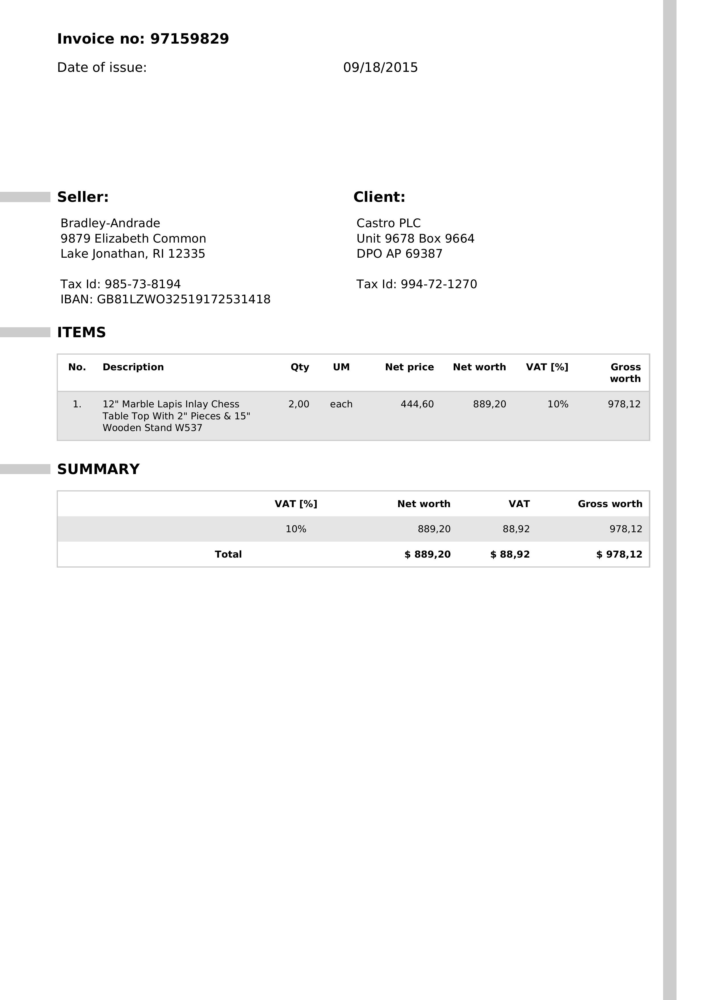

Each source (left) next to the semantic HTML emon generated for it (right) and the Model as JSON. Generated by bb samples with the pinned pdfium and Tesseract at default options; see README.md for the commands, what to look at and the known weak spots. The right-hand pane carries light styling added by this page only; the .html files themselves are emon's bytes, unstyled.
Born-digital government report: cover, headings, running furniture, footnote-style notes, tables. US Government work, trimmed from 45 pages.
source gao-report.html gao-report.json top
The large real-world stand-in (a 10-K was not redistributable): dense multi-column publication text, lists, boxes, tables. Public domain.
source irs-pub15-excerpt.html irs-pub15-excerpt.json top
Synthetic two-column article: reading order across columns and pages.
source columns-two.html columns-two.json top
Per-page footnotes tied to their marks and kept out of the body.
source footnotes.html footnotes.json top
A large initial letter that must rejoin its word instead of becoming a stray paragraph.
source dropcap.html dropcap.json top
Justified, ragged and centred paragraphs with hyphenated line ends; data-emon-align on blocks.
source align-justify.html align-justify.json top
Charts with captions as figure nodes. The .assets.html variant (assets=figures) inlines each figure as a PNG.
source figures-charts.html figures-charts.json figures-charts.assets.html top
Header block, bill-to, line-item table with right-aligned amounts, totals, a footer.
source invoice.html invoice.json top
A transaction table over three pages with its header repeated on each: one table, one thead.
source bank-statement.html bank-statement.json top
A real retail bank statement, PII replaced: account summary, three transaction tables with styled header rows, right-aligned amount and balance columns, running header and footer.
source bank-statement-real.html bank-statement-real.json top
A real US tax form: fields, checkboxes, numbered lines, boxed parts. Public domain.
source irs-form-w9.html irs-form-w9.json top
The real 2025 Form 1040: income lines, dependants, checkboxes, boxed parts. Public domain. It crashed the Rust driver (i32 overflow, D521) until it was fixed.
source irs-form-1040.html irs-form-1040.json top
A ruled table whose header row repeats per page (thead) and whose body continues.
source table-multipage.html table-multipage.json top
Rows told apart by shading only, no ruling lines.
source table-zebra.html table-zebra.json top
Partial rowspan/colspan: cells that span rows or columns.
source table-spans.html table-spans.json top
No lines at all: columns found from alignment of the text.
source table-unruled.html table-unruled.json top
A real, wide statistical table with spanning headers and footnotes. US Government work.
source uscourts-table.html uscourts-table.json top
A diagonal DRAFT watermark: it must be recorded as a watermark and stay out of the body.
source watermark-draft.html watermark-draft.json top
A vector stamp and a seal: each becomes a seal node, its words stay out of the body.
source seal-stamp.html seal-stamp.json top
A handwritten-style signature across a typed name: a seal node of subkind signature, name still read.
source signature.html signature.json top
A tagged PDF: the structure tree (Table/TR/TH/TD) is the source of the table.
source tagged-table.html tagged-table.json top
The text layer is wrong (unmapped glyphs); OCR fusion replaces it with what the page shows.
source broken-tounicode.html broken-tounicode.json top
Black-and-white raster only, no text layer: everything is OCR.
source scan-plain.html scan-plain.json top
A colour raster with paper tone; table recovered from OCR geometry.
source scan-color-invoice.html scan-color-invoice.json top
A stamp printed over the text: the stamp should become a seal node, the body text survive.
source scan-stamp-overlay.html scan-stamp-overlay.json top
A bare JPEG as input (synthetic katanaml invoice, MIT / CC BY 4.0): same pipeline as a scan.
source image-invoice.html image-invoice.json top

A bare PNG (synthetic Bankstatemently preview, MIT) with a faint BANK DOCUMENT watermark; low resolution on purpose.
source image-statement.html image-statement.json top
RTL text: dir attributes and logical order, not the visual order of the glyphs.
source arabic-rtl.html arabic-rtl.json top
Chinese/Japanese text: no inter-word spaces, ideographic punctuation, CJK font.